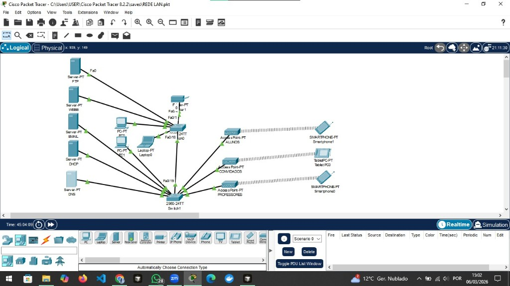

Qual é o endereço IP da rede local configurada no exercício?
192.168.3.1
Rede Local da Escola Fundão - Cisco Packet Tracer

Este projeto apresenta uma rede LAN completa simulada no Cisco Packet Tracer, com 5 servidores em funcionamento (DHCP, DNS, Web, FTP, Email) e ligações wireless aos dispositivos móveis.
Atribuição automática de endereços IP aos dispositivos da rede.
Resolução de nomes de domínio (ex: WEBB → 192.168.3.x).
Servidor HTTP que aloja páginas HTML acessíveis via browser.
Serviço de correio com SMTP e POP3, domínio escolafundao.pt.
Transferência de ficheiros com utilizadores e permissões configurados.
Ping entre PCs e laptop da rede para verificar conectividade.
Access Points (ALUNOS, CONVIDADOS, PROFESSORES) com dispositivos móveis ligados via Wi-Fi.
192.168.3.1
255.255.255.0
192.168.3.1
254
Regista-te aqui. Os dados são guardados na base de dados do servidor (não visíveis no site).
Onde ver os dados guardados? Acede a /admin (com o servidor a correr) para ver todos os utilizadores na base de dados.
| ID | Nome | Gmail | IP | Ações |
|---|